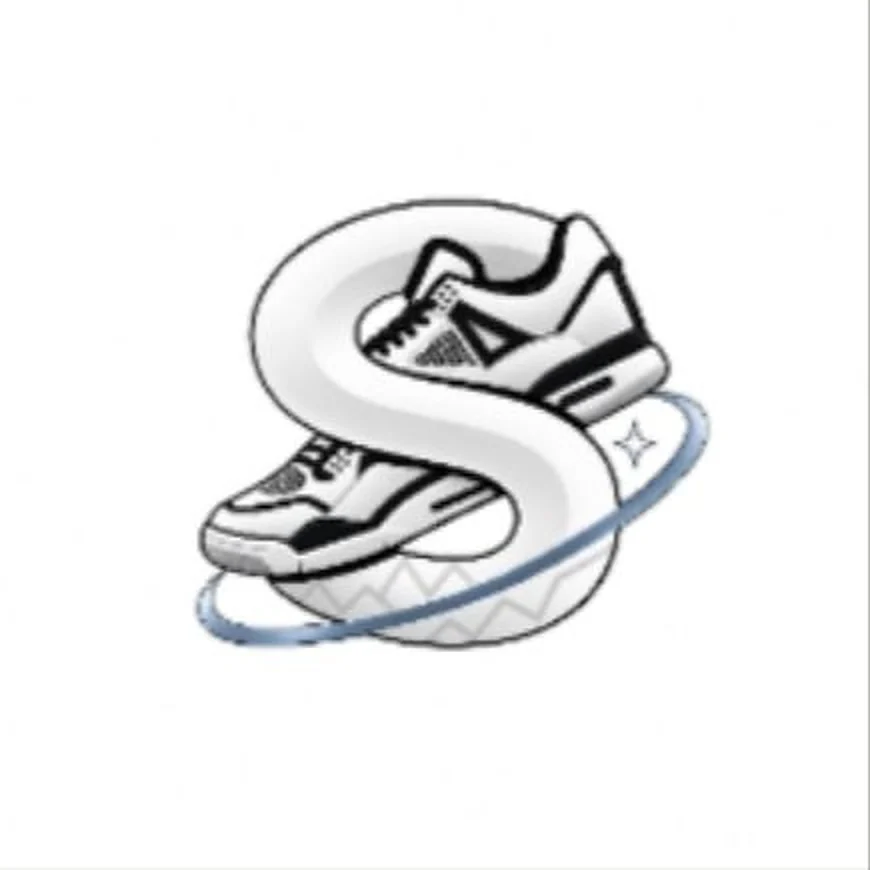

IT Support · Networking Fundamentals · Software QA
I’m a fourth-year IT student who enjoys troubleshooting computers and figuring out how software works in everyday use. I build website and app prototypes, and I’m currently practicing full-stack web development to understand how the interface, server, and data work together. I’m also interested in IT support, networking, and software QA, and like learning by working through real problems.
Based in Cavite, PhilippinesBSIT · 4th YearOpen to OJT opportunities
Scroll to explore
Selected work
Projects are presented by what I contributed, not just what the product does.

Academic thesis project2026
Homepage · Product catalog · System monitoringClick any screen to inspect ↗
Thesis platform / 2026
SoleSpace
Project Manager & Primary Manual QA Tester
An integrated footwear retail and repair management platform in Cavite, featuring business operations, a mobile application and decision support tools. I defined expected workflows with the team, executed manual tests across ERP user roles, reported issues and verified fixes.
Two issues I identified, reported, and retested after programmer fixes.
01
Dispatcher / Rider
Assigned delivery not visible
A Dispatcher-assigned delivery didn't appear in the Rider's account. I reported the discrepancy with screenshots and retested the assignment after the programmer fixed it.
02
Returns / Finance
Refund approval sequence
A third-party return requested a Dispatcher shipment too early. I documented the Staff → Finance → shipment sequence and verified the workflow after correction.
Interface design
Personal Figma concepts. Interactive prototypes, not deployed applications.
Designed a navigable healthcare management UI concept covering its public landing page, sign-in, dashboard, forms and logout. Created in Figma; not a deployed healthcare system.
Designed an interactive mobile storefront prototype with account access, product discovery, cart and checkout screens. The Figma prototype demonstrates navigation, not working payments or a backend.
These sites demonstrate frontend design. Booking, ordering and other backend processing are not part of these projects.
Areas of practice
Technical foundations backed by hands-on work and academic projects.
IT Support
Desktop assembly, Windows installation, troubleshooting and maintenance.
Networking
IP configuration, connectivity testing, cabling and Packet Tracer practice.
System Administration
Windows Server, Active Directory, DHCP and Group Policy in classroom labs.
Software QA
Functional testing, cross-role workflows, issue reporting and retesting.
Technical skills in practice
Practical IT tasks spanning computer support, Windows setup and academic networking labs.
Personal & peer support
PC hardware & troubleshooting
Assembled and maintained desktop computers, assisted with PC wiring and setup, cleaned components, and replaced keyboard switches.
Examples: Narrowed a no-boot problem to a likely motherboard RAM-slot issue, and resolved overheating-related shutdowns through cooler maintenance, thermal paste replacement and stress retesting.
Personal & peer support
Windows installation & setup
Created bootable USB installers, configured the boot process, installed Windows and drivers, formatted drives, and completed activation.
Practical application: Prepared desktop and laptop systems for use, from Windows installation media and drive setup through driver configuration.
Academic laboratory
Networking & structured cabling
Practiced network configuration using Cisco Packet Tracer, terminated straight-through and crossover Ethernet cables, and worked with keystones and patch panels.
Tools & methods: T568A and T568B wiring, crimping tools, and Ethernet cable testing.
Academic laboratory
Windows Server & virtualization
Configured Windows Server and client virtual machines in Oracle VirtualBox, practicing domain setup, user accounts, DHCP, DNS, connectivity and shared permissions.
Lab exercise: Applied Group Policy to change client wallpapers and restrict access to Settings.
Personal computer support and coursework are described separately. Windows Server and network cabling work were academic laboratory exercises, not production infrastructure administration.
Work with real requirements
Client-directed frontend work and hands-on inventory responsibilities.
Client-directed · Frontend & UI
Coffee shop website
Designed and built product browsing and pickup-order checkout interfaces in HTML, CSS and JavaScript, implementing requested revisions. Backend development was outside my role.
Client-directed · Frontend & UI
Clinic landing page
Designed and developed a clinic landing-page frontend using HTML, CSS and JavaScript, based on requirements and client feedback. Backend development was outside my role.
Family business · Inventory assistance
Inventory operations
Supported stock counting, replenishment orders, restocking and packing customer orders.
Practical non-IT experience
Education & certificates
Academic foundation and independently completed learning.
Education · 2023 — Present
National College of Science and Technology
Cavite, Philippines
Current degree program
Bachelor of Science in Information Technology
Fourth year · September 2023 — Present
Continuing education
Course certificates
Five SoloLearn courses completed. Select a certificate to see the original full-size image.
Currently exploring IT internships
Let’s work together.
I'm looking for an OJT opportunity where I can apply my skills in IT support, networking and software testing, contribute to a team, and keep learning.
Technical foundations in PC troubleshooting and Windows Server labs, combined with directly documented manual software testing and independent frontend work.